Earth observation / Setup
Add a visualization
Turn a NASA Earth observation into a sound and visualization.
- Upload
- Map area
- Colour bar
- Sound
- Review

TERRATONEEarth observation / Setup
Turn a NASA Earth observation into a sound and visualization.